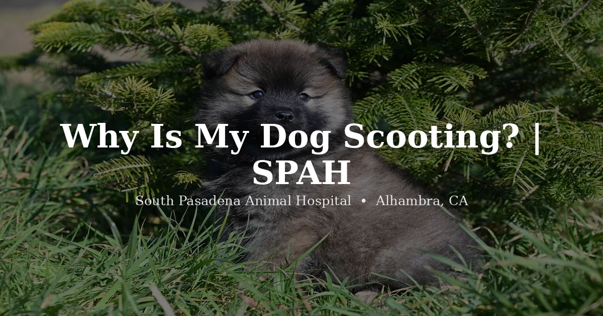

October 14, 2026 · 6 min read
Why Is My Dog Scooting?

It's a little comical the first time you see it: your dog plops down and drags its rear across the carpet like it's trying to erase a chalk line. Owners often laugh, then wonder if something's wrong. Usually the answer is yes, a little something is bothering your dog back there, and scooting is just how it tries to scratch an itch it can't reach. Most of the time it's one specific, very fixable culprit.
The usual suspect: anal glands
If a dog is scooting, the first thing we think of is the anal glands. These are two small scent sacs tucked just inside the anus, and in a normal dog they empty a little each time it passes a firm stool. When they don't empty the way they should, they get overfull and uncomfortable, which sends the dog scooting to try to relieve the pressure. Left alone, overfull glands can become impacted, then infected, and in some cases form an abscess that bursts, so this is worth sorting out rather than ignoring.
Besides scooting, the tell-tale signs of anal gland trouble are licking or biting at the rear, a distinctive fishy odor, and sometimes swelling or redness right beside the anus. Smaller breeds seem to run into it more often, though any dog can.
The other causes worth ruling out
Anal glands lead the list, but they aren't the only reason a dog scoots.
- Worms. Tapeworms in particular can cause itching around the anus. You might spot small rice-like segments near the tail or in the bedding.
- Itchy skin. Allergies that inflame the skin can make the whole rear region itch, and scooting becomes one way to scratch it.
- Trapped debris or matting. Fecal matter stuck to the fur, or matted hair around the bottom, especially in long-coated or recently-groomed dogs, can irritate the area.
- Lingering irritation after diarrhea or a recent bout of loose stool.
Please don't DIY the glands
A quick word of caution, because the internet is full of how-to videos. We'd steer most owners away from expressing anal glands at home. Done wrong or done too often, it can bruise, inflame, or scar the area, and routine expression simply isn't necessary for most healthy dogs. More to the point, scooting can mean infection or another problem that needs actual treatment, and squeezing the glands yourself won't fix that. A vet or a trained groomer can express the glands safely and, just as importantly, tell you whether there's something more going on.
When scooting needs a vet
Book a visit if your dog:
- Is scooting often, or keeps at it over several days
- Has swelling, redness, or a sore or draining spot next to the anus
- Has blood or pus back there, or a strong fishy smell
- Is licking or biting the area constantly, or seems painful when you touch near the tail
- Has visible worm segments around the rear or in the bedding
A one-off scoot that never happens again is usually nothing. A dog that keeps doing it is asking for help. We see dogs at our dog vet in Alhambra, and anal gland checks are a quick, routine part of what we do. If itchy skin turns out to be the driver, our guide to dog allergies in the SGV is a helpful read, and our pricing page covers what to expect.
Frequently Asked Questions
Why do dogs scoot their bottoms on the floor?
To relieve irritation or itching around the rear. The most common cause is an anal gland problem, where the two small scent sacs just inside the anus get overfull, impacted, or infected. Other causes include worms, itchy skin from allergies, trapped stool or matted fur, and irritation after diarrhea.
What are anal glands in dogs?
Anal glands (or anal sacs) are two small scent glands just inside a dog's anus that normally empty a little with each firm stool. When they don't empty properly, they get overfull and uncomfortable, then impacted, and sometimes infected or abscessed. Signs include scooting, licking at the rear, a fishy odor, and swelling or redness near the anus.
Should I express my dog's anal glands myself?
We'd generally advise against it. Expressing them incorrectly or too often can cause injury, inflammation, or scarring, and routine expression isn't needed for most healthy dogs. If your dog is scooting, it's better to have a vet or trained groomer check and express the glands and confirm there isn't an infection or other cause.
When should I take my scooting dog to the vet?
See a vet if the scooting is frequent or persistent, if there's swelling, redness, or a sore or draining spot near the anus, blood or pus, a strong fishy smell, or constant licking or signs of pain. Occasional one-off scooting that stops on its own is usually fine, but a dog that keeps at it needs a look.